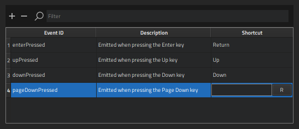
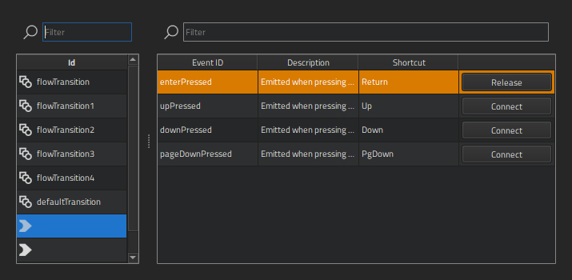
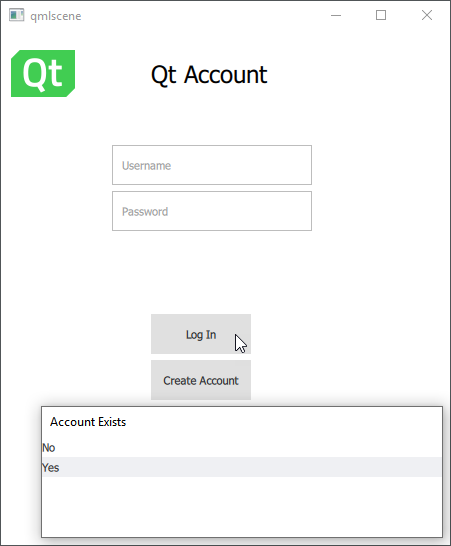

Simulating Events
While transition lines are useful for prototyping, in production you need to use the real signals from UI components to control the flow of the application. For this purpose, you can use action areas in a more advanced way, by having them listen to signals from flow items or the controls in them and by connecting these to the flow view. You can use keyboard shortcuts to simulate these events when you preview the UI.
When you use the wizard to create a Flow View component, select the Use event simulator check box to add an event simulator to the flow view.
You can create an event list where you assign keyboard shortcuts to events, and then use context-menu commands to attach the events to action areas or transition lines.
Creating Event Lists
To create an event list:
- Right-click in the 2D or Navigator view and select Event List > Show Event List.
- In the Event List dialog, select
 to add a keyboard shortcut for triggering an event to the list.
to add a keyboard shortcut for triggering an event to the list.
- In the Event ID field, enter an identifier for the event. You can search for existing events by entering search criteria in the Filter field.
- In the Description field, describe the keyboard shortcut.
- In the Shortcut field, press the keyboard key that will trigger the event, and then select R to record the keyboard shortcut. The key identifier appears in the field.
You can now assign the events to action areas and transitions.
Assigning Events to Actions
To assign events to actions:
- In Navigator, select an action area or transition line.
- In the context menu, select Event List > Assign Events to Actions.

- In the ID field, select a transition or an action area . You can search for events by entering search criteria in the Filter field.
- To connect an event, select Connect next to an event in the list. To release a connected event, select Release.
- Press Alt+P to preview the UI.
- Select action areas in the preview, double-click events in the event list, or use the keyboard shortcuts to trigger events.

If the event triggers a flow decision, you can select the path to take to the next flow item.